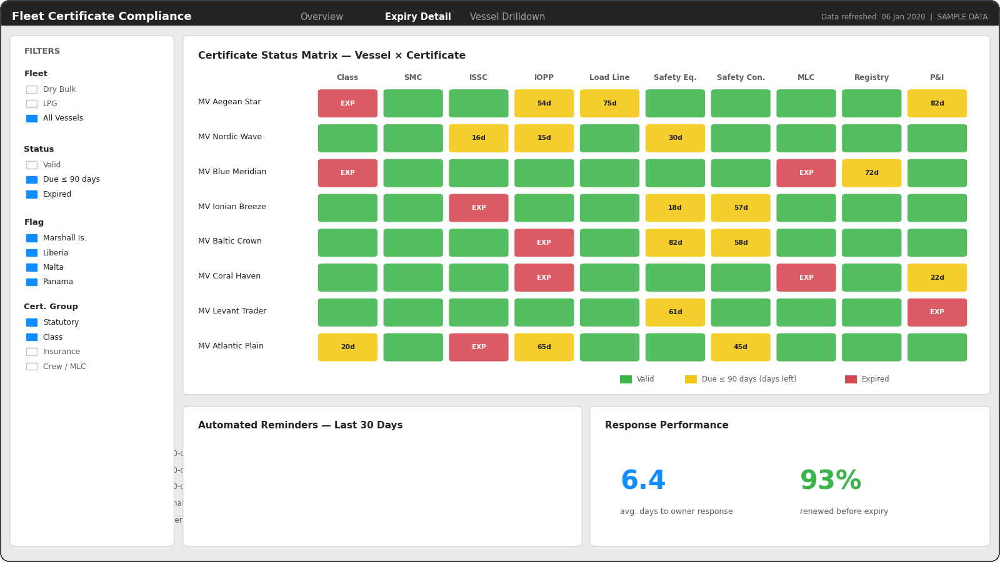

The Problem
Every vessel carries a stack of statutory, class and insurance certificates — Class, SMC, ISSC, IOPP, Load Line, MLC and more — each with its own expiry date. Tracking them across a fleet by spreadsheet and inbox is error-prone, and a lapsed certificate can hold up port calls, charter deliveries and insurance cover. The chasing itself was manual: someone had to remember to email the owner or agent, again and again.
What I Built
A central register of certificates per vessel, with validity checks on every submitted copy: type, issue and expiry dates, and issuing body captured on upload, so an out-of-date or wrong document is flagged immediately instead of being discovered when it matters.
Around the register sits an automated reminder workflow: templated emails to agents and owners at set intervals before expiry (90 / 60 / 30 days and a final notice), each requesting an updated copy — and the cycle closes when the newer certificate is uploaded and validated. What used to depend on someone's memory became a process that runs itself.
Reporting in Power BI
On top of the register, a Power BI layer gives management the fleet-wide view: compliance rate, what is expiring and when, which vessels need attention, and how the reminder pipeline is performing.
The dashboards below are recreated with fictional vessel names and sample data, as the original system and its data belong to the company.

The status matrix became the daily working view: every vessel against every certificate type, colour-coded, with days-to-expiry on anything inside the 90-day window — one glance replacing a morning of spreadsheet checks.